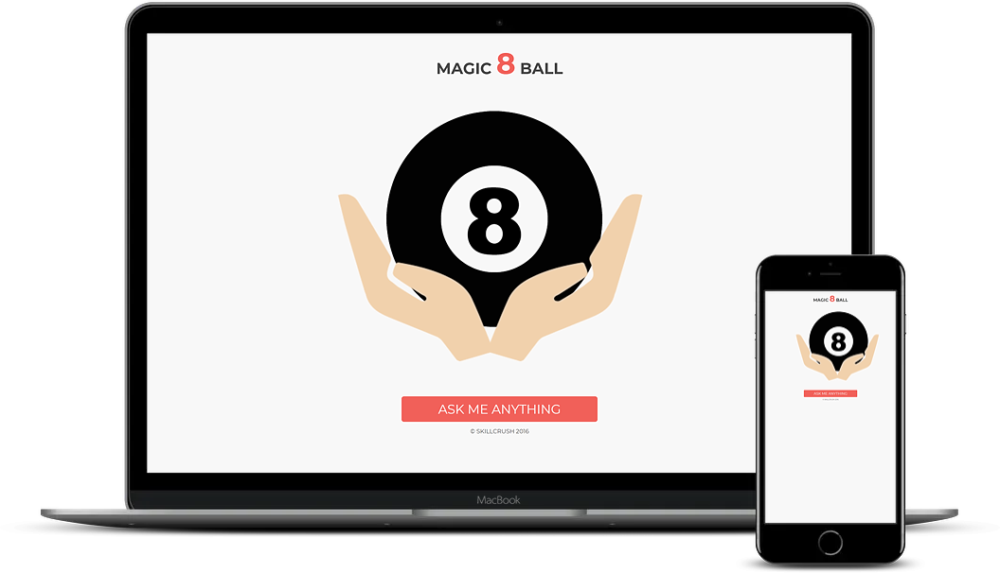
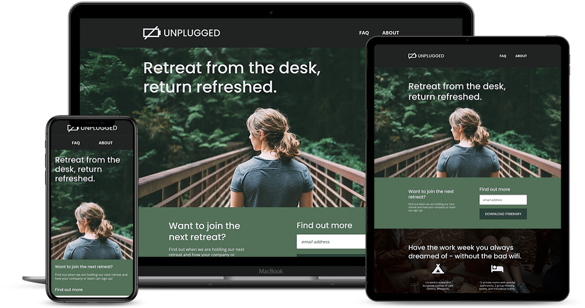

HTML5
portfolio

Magic 8-Ball
JavaScript
jQuery
The Magic 8-Ball project is a JavaScript-based web application that imitates a real magic 8-ball by having a user ask a question and receiving an answer in return. (Skillcrush Project)

Unplugged
HTML5
CSS3
Flexbox
Unplugged is a tech retreat website concept that is built from a design comp with HTML5 and CSS3. The three-page website is fully responsive across mobile, tablet, and desktop devices. (Skillcrush Project)

Rouge Pickings
HTML5
CSS3
Flexbox
Rouge Pickings is a one-page responsive website built with HTML5 and CSS3 for a small business. This site was originally built non-responsive, then converted into a mobile-first, fully responsive website. (Skillcrush Project)
skills
CSS3
JavaScript
Git & Git Hub
Responsive Design
jQuery
about
Elizabeth is a self-taught front-end developer that loves solving complex problems and learning new technologies. Her prior experience working in the sports industry gave her the skills to be successful in leading operations of international events and delivering projects with maximum client success.
Elizabeth is a native of Massachusetts (Go Sox!) and is currently based in Las Vegas, Nevada, USA. In her free time she enjoys running, road trips, and spending time with her dogs.